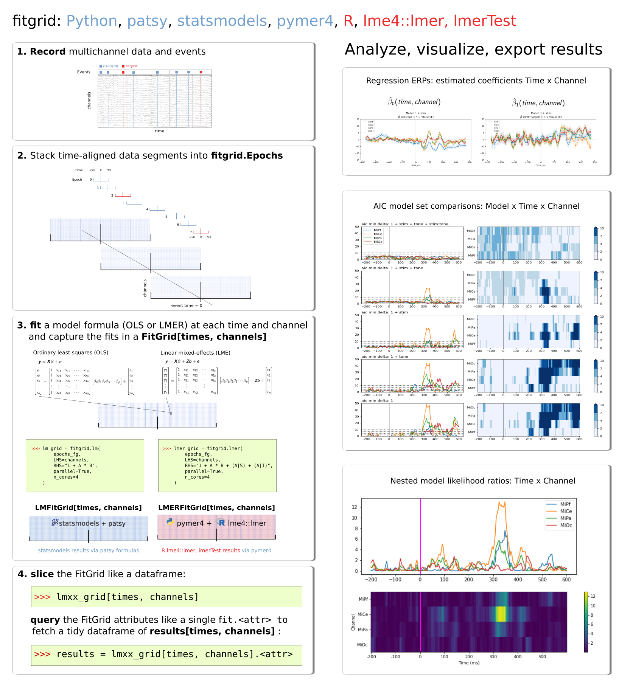

fitgrid¶
fitgrid is a Python package originally designed to streamline the computation and interpretation of regression ERPs (rERPs) as described by Smith and Kutas ([SmiKut2015]). That report articulates the conceptual foundation of rERPs as time-series of estimated regression variable coefficients, \(\hat{\beta}_i\), for linear models of the form \(\beta_0 + \beta_1 X_1 + \ldots + \beta_n X_n + e\) and their role in modeling EEG and other types of time-series data.
The fitgrid package is intended for researchers with a basic working knowledge of scientific computing in Python. It provides access to the multichannel time-series regression modeling computations with one line of code and the familar ordinary least squares (OLS) and linear mixed-effects regression (LMER) modeling formulas shared by Python and R (patsy [Smith2020]; lm [R2020], lme4::lmer [BatesEtAl2015]). The fit results across time and channels are available on demand and returned as tidy indexed pandas.DataFrames with one line of code and the same syntax used to access results in a single fit object. These interfaces allow researchers to conduct this type of modeling flexibly, efficiently, informatively, and reproducibly with familiar tools and minimal programming in Python data analysis workflows.
For a summary of the problem fitgrid solves, why it is worth solving, and how it is solved, see the about_fitgrid. The Workflow Outline section outlines and illustrates the fitgrid analysis workflow with executable examples. The User Guide provides additional information about specific topics including how the OLS models are fit in Python statsmodels [SeaSkiPer2010] and the LMER models are fit in R (lme4::lmer, lmerTest [KuzBroChr2017]) via pymer4 [Jolly2018] under the hood. The Examples Gallery contains executable fitgrid vignettes with simulated data, experimental EEG recordings, and NOAA tide and atmospheric observations. The examples can be downloaded as Python scripts or Jupyter notebooks thanks to sphinx-gallery. The API is a complete listing of fitgrid classes, methods, attributes, and functions. The Bibliography includes References and Research reports using fitgrid.
